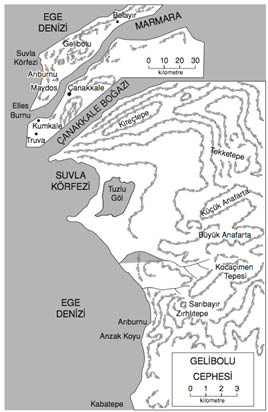
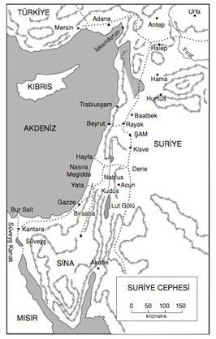
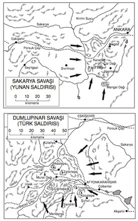
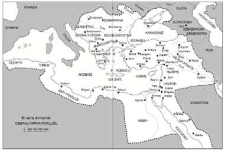
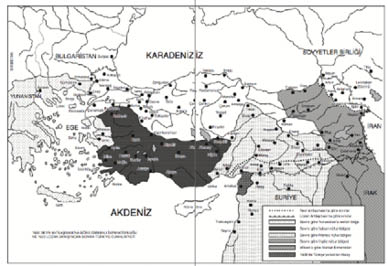

SON SÖZ
Kemal Atatürk, yeni bir Türkiye yaratmıştı. Onu tecrübeli bir şefin, verimli bir yönetimin ve sırası gelince daha liberal bir şekilde gelişebilecek esnek bir parlamenter sistemin ellerine bıraktı.171 Ülkesini ortaçağdan çağımızın eşiğine, hatta bundan bir adım ileriye getirmişti. Gerideki boşlukları doldurup ülkeyi yeni alanlarda daha ileriye götürmek, ondan sonra yerine geçeceklere düşen bir görevdi.
İlerleme hızlı olmuştu; belki de bazıları için fazla hızlı, Atatürk, yarım kuşaklık bir süre içinde yeni bir Türk toplumu yaratmak istemişti. Yüzyılların dini geleneklerini birdenbire söküp atmış, ama bunların yerine yeni bir laik kültür geliştirmeye vakit bulamamıştı. Bu hal, Türk halkından bir kısmının kafasında ve yaşayışında birtakım sarsıntılar doğurdu. Öyle ki, Atatürk’ün ölümünden yirmi yıl sonra, yerine geçenlerden biri, uyuklayan dini güçleri, siyasi amaçlar uğruna yeniden canlandırıp sömürerek, Atatürk Devrimi’ni tehlikeye düşürebilecekti.172
Sosyal bakımdan Türkiye’nin, Atatürk’ün kazandırdığı birliği sağlamlaştırması için, okumamış köylüsüyle okumuş burjuvazisi arasındaki gediği kapatması gerekiyordu. Şimdilik, Türk Devrimi’nden asıl yararlanan bu şehirli sınıftı. Atatürk’ün, merkeziyetçi bir hükümete yardımcı ve yönetici olarak yetiştirdiği bu Batılılaşmış seçkinlerin, bütün iyi şeylerden henüz tüm payını almamış olan köylü ile daha yakın ilişki kurması gerekmekteydi. Bu gedik, ancak eğitimin gelişmesi ve ekonomik sorunların etkili bir şekilde ele alınmasıyla kapatılabilirdi. Atatürk kuşağı bu sorunların yabancısıydı. Ölümünden yirmi beş yıl sonra, 1963’te ülkeyi bir bütün olarak üretici bir ekonomik temele yerleştirmek için yeni bir milli savaş açılacaktı.
Ama bütün bunlar, herhangi bir yeni milletin çektiği büyüme sancılarından daha fazla bir şey değildir. Atatürk, kurtardığı Türkiye’ye sağlam temeller ve ilerideki gelişmesi için belirli bir amaç bırakmıştı. Ona yalnız sağlam kuruluşlar vermekle kalmadı; kökünü yurtseverlikten alan, kendi kendisine karşı güven duygusuyla beslenen ve yeni enerjiler için verimli ödüller vaat eden bir milli ülkü de sağladı. Sözleri ve davranışlarıyla, kahramanlara tapmaya alışmış bir milletin hayalini besleyecek özel bir efsane yarattı. Onlara Batı demokrasisinin değerlerine inanmayı öğretti; bu demokrasiye varmak için tutulan yol değişik bile olsa, ona karşı içten saygı duymalarını sağladı. Atatürk’ün bütün verdikleri, bugünün Türk’ünde canlı bir kuvvet olarak hâlâ yaşamaktadır.
Bunun mantıki sonucu, Türkiye Cumhuriyeti’nin Batı’nın güvenilir bir müttefiki olarak ortaya çıkması oldu. Asker Atatürk, zamanında başka hiç kimsenin başaramayacağı şekilde, Avrupa devletlerinin kendisine karşı planlarını altüst edip, tarihin yüzünü değiştirerek, ülkesini kurtarmıştı. Devlet adamı Atatürk, ülkesinin bu devletlerce eşit koşullarla kabul edilmesini ve Yakındoğu gibi sık sık değişikliğe uğrayan bir bölgede bir istikrar unsuru olarak kalmasını sağladı.
İşte, “Türklerin Atası” Mustafa Kemal’in gerçekleştirdiği büyük eser.





171 1950’deki serbest seçimler sonunda, muhalefetteki Demokrat Parti iktidara gelmiş, Bayar da cumhurbaşkanı olmuştur.
172 Bu da Demokrat Parti’nin başkanı Adnan Menderes’ti. Kendisine Tanrı tarafından bir hak verilmiş gibi davranarak diktatörlüğe kayması, 27 Mayıs 1960 ihtilaline yol açtı; Menderes rejimi yıkıldı. Türkiye, kısa süren bir askeri yönetimden sonra, yeni bir Anayasa’ya kavuştu.